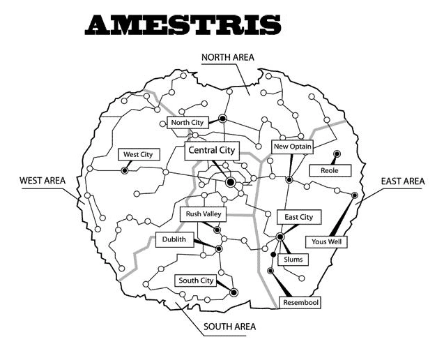

Amestris
El Estado de Amestris es el país principal en la serie y en donde viven los protagonistas. Es una nación bastante grande. La provincia de Ishval es diferente al país en habitantes y cultura: La gente es muy religiosa y están en contra de la alquimia.
Simbolo
Su bandera es verde con un dragón macho blanco sobre el fondo. El escudo igual, pero con una franja amarilla por el borde. Su himno es la Marcha Militar de Amestris.
En el anime se muestra su parecido a la Alemania nazi de los años 30, en cuanto a estructura social y a armamento.
Geografia
El país tiene forma redonda, excepto por la zona norte. en la que hay un pequeño "entrante". Su capital (y ciudad más poblada) es Central City, situada, como el nombre indica, en el centro del país, en Central Área. El resto del país se divide en 4 provincias: Área Este, Área Oeste, Área Sur y Área Norte.
Amestris hace fronteras con: Aerugo en el sur, el imperio de Drachma al norte, Creta al oeste y el desierto de Oriente al este. Al norte se encuentra, además, La cordillera Briggs, que mantiene la paz entre Amestris y Drachma.
Ejercito
Desde que King Bradley fue elegido para ser el Führer de Amestris, convirtió al ejército en la base principal del país. Mucha gente los odia, especialmente a los alquimistas nacionales.
Proposito
Amestris se creó para un propósito: La creación de un círculo de transmutación gigantesco que recubra el país, de la misma forma que en Xerxes. Durante centenares de años han habido disturbios y muertes en puntos del mapa que coinciden con puntos de un círculo de transmutación. El propio país tiene esa forma. Pereza ha estado cavando el círculo durante los últimos años. Padre tiene previsto destruir el país.